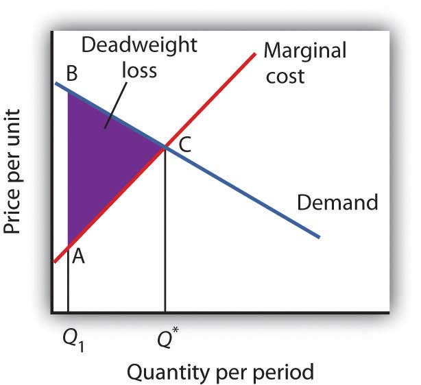
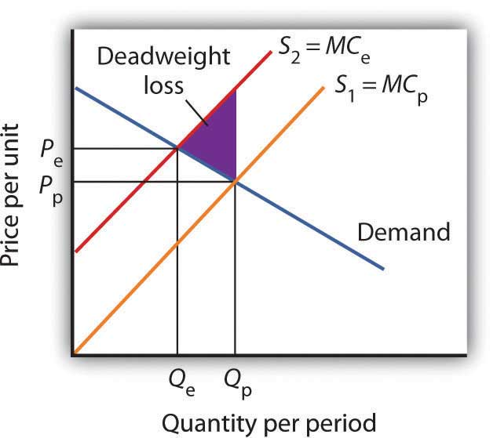

Private decisions in the marketplace may not be consistent with the maximization of the net benefit of a particular activity. The failure of private decisions in the marketplace to achieve an efficient allocation of scarce resources is called market failureThe failure of private decisions in the marketplace to achieve an efficient allocation of scarce resources.. Markets will not generate an efficient allocation of resources if they are not competitive or if property rights are not well defined and fully transferable. Either condition will mean that decision makers are not faced with the marginal benefits and costs of their choices.
Think about the drive that we had you take at the beginning of this chapter. You faced some, but not all, of the opportunity costs involved in that choice. In particular, your choice to go for a drive would increase air pollution and might increase traffic congestion. That means that, in weighing the marginal benefits and marginal costs of going for a drive, not all of the costs would be counted. As a result, the net benefit of the allocation of resources such as the air might not be maximized.
The model of demand and supply assumes that markets are competitive. No one in these markets has any power over the equilibrium price; each consumer and producer takes the market price as given and responds to it. Under such conditions, price is determined by the intersection of demand and supply.
In some markets, however, individual buyers or sellers are powerful enough to influence the market price. In subsequent chapters, we will study cases in which producers or consumers are in a position to affect the prices they charge or must pay, respectively. We shall find that when individual firms or groups of firms have market power, which is the ability to change the market price, the price will be distorted—it will not equal marginal cost.
Some goods are unlikely to be produced and exchanged in a market because of special characteristics of the goods themselves. The benefits of these goods are such that exclusion is not feasible. Once they are produced, anyone can enjoy them; there is no practical way to exclude people who have not paid for them from consuming them. Furthermore, the marginal cost of adding one more consumer is zero. A good for which the cost of exclusion is prohibitive and for which the marginal cost of an additional user is zero is a public goodA good for which the cost of exclusion is prohibitive and for which the marginal cost of an additional user is zero.. A good for which exclusion is possible and for which the marginal cost of another user is positive is a private goodA good for which exclusion is possible and for which the marginal cost of another user is positive..
National defense is a public good. Once defense is provided, it is not possible to exclude people who have not paid for it from its consumption. Further, the cost of an additional user is zero—an army does not cost any more if there is one more person to be protected. Other examples of public goods include law enforcement, fire protection, and efforts to preserve species threatened with extinction.
Suppose a private firm, Terror Alert, Inc., develops a completely reliable system to identify and intercept 98% of any would-be terrorists that might attempt to enter the United States from anywhere in the world. This service is a public good. Once it is provided, no one can be excluded from the system’s protection on grounds that he or she has not paid for it, and the cost of adding one more person to the group protected is zero. Suppose that the system, by eliminating a potential threat to U.S. security, makes the average person in the United States better off; the benefit to each household from the added security is worth $40 per month (about the same as an earthquake insurance premium). There are roughly 113 million households in the United States, so the total benefit of the system is $4.5 billion per month. Assume that it will cost Terror Alert, Inc., $1 billion per month to operate. The benefits of the system far outweigh the cost.
Suppose that Terror Alert installs its system and sends a bill to each household for $20 for the first month of service—an amount equal to half of each household’s benefit. If each household pays its bill, Terror Alert will enjoy a tidy profit; it will receive revenues of more than $2.25 billion per month.
But will each household pay? Once the system is in place, each household would recognize that it will benefit from the security provided by Terror Alert whether it pays its bill or not. Although some households will voluntarily pay their bills, it seems unlikely that very many will. Recognizing the opportunity to consume the good without paying for it, most would be free riders. Free ridersPeople or firms that consume a public good without paying for it. are people or firms that consume a public good without paying for it. Even though the total benefit of the system is $4.5 billion, Terror Alert will not be faced by the marketplace with a signal that suggests that the system is worthwhile. It is unlikely that it will recover its cost of $1 billion per month. Terror Alert is not likely to get off the ground.
The bill for $20 from Terror Alert sends the wrong signal, too. An efficient market requires a price equal to marginal cost. But the marginal cost of protecting one more household is zero; adding one more household adds nothing to the cost of the system. A household that decides not to pay Terror Alert anything for its service is paying a price equal to its marginal cost. But doing that, being a free rider, is precisely what prevents Terror Alert from operating.
Because no household can be excluded and because the cost of an extra household is zero, the efficiency condition will not be met in a private market. What is true of Terror Alert, Inc., is true of public goods in general: they simply do not lend themselves to private market provision.
Because many individuals who benefit from public goods will not pay for them, private firms will produce a smaller quantity of public goods than is efficient, if they produce them at all. In such cases, it may be desirable for government agencies to step in. Government can supply a greater quantity of the good by direct provision, by purchasing the public good from a private agency, or by subsidizing consumption. In any case, the cost is financed through taxation and thus avoids the free-rider problem.
Most public goods are provided directly by government agencies. Governments produce national defense and law enforcement, for example. Private firms under contract with government agencies produce some public goods. Park maintenance and fire services are public goods that are sometimes produced by private firms. In other cases, the government promotes the private consumption or production of public goods by subsidizing them. Private charitable contributions often support activities that are public goods; federal and state governments subsidize these by allowing taxpayers to reduce their tax payments by a fraction of the amount they contribute.
Figure 6.10 Public Goods and Market Failure
Because free riders will prevent firms from being able to require consumers to pay for the benefits received from consuming a public good, output will be less than the efficient level. In the case shown here, private donations achieved a level of the public good of Q1 per period. The efficient level is Q*. The deadweight loss is shown by the triangle ABC.
While the market will produce some level of public goods in the absence of government intervention, we do not expect that it will produce the quantity that maximizes net benefit. Figure 6.10 "Public Goods and Market Failure" illustrates the problem. Suppose that provision of a public good such as national defense is left entirely to private firms. It is likely that some defense services would be produced; suppose that equals Q1 units per period. This level of national defense might be achieved through individual contributions. But it is very unlikely that contributions would achieve the correct level of defense services. The efficient quantity occurs where the demand, or marginal benefit, curve intersects the marginal cost curve, at Q*. The deadweight loss is the shaded area ABC; we can think of this as the net benefit of government intervention to increase the production of national defense from Q1 up to the efficient quantity, Q*.
Note that the definitions of public and private goods are based on characteristics of the goods themselves, not on whether they are provided by the public or the private sector. Postal services are a private good provided by the public sector. The fact that these goods are produced by a government agency does not make them a public good.
Suppose that in the course of production, the firms in a particular industry generate air pollution. These firms thus impose costs on others, but they do so outside the context of any market exchange—no agreement has been made between the firms and the people affected by the pollution. The firms thus will not be faced with the costs of their action. A cost imposed on others outside of any market exchange is an external costA cost imposed on others outside of any market exchange..
We saw an example of an external cost in our imaginary decision to go for a drive. Here is another: violence on television, in the movies, and in video games. Many critics argue that the violence that pervades these media fosters greater violence in the real world. By the time a child who spends the average amount of time watching television finishes elementary school, he or she will have seen 100,000 acts of violence, including 8,000 murders, according to the American Psychological Association. Thousands of studies of the relationship between violence in the media and behavior have concluded that there is a link between watching violence and violent behaviors. Video games are a major element of the problem, as young children now spend hours each week playing them. Fifty percent of fourth-grade graders say that their favorite video games are the “first person shooter” type.See Report of the Committee on Commerce, Science, and Transportation, Children’s Protection From Violent Programming Act, Senate Report 106–509 (October 26, 2000), Washington, D.C.: U.S. Government Printing Office, 2000, and Michael Rich, “Violent Video Games Testimony,” Chicago City Council, October 30, 2000, at http://www.aap.org/advocacy/rich-videogameviolence.pdf.
Any tendency of increased violence resulting from increased violence in the media constitutes an external cost of such media. The American Academy of Pediatrics reported in 2001 that homicides were the fourth leading cause of death among children between the ages of 10 and 14 and the second leading cause of death for people aged 15 to 24 and has recommended a reduction in exposure to media violence.Mark Rosenberg, “Successful State Strategies,” Adolescent Health Leadership Forum, December 6, 2003, at http://www.aap.org/advocacy/ahproject/AHLSuccessful StateStrategiesMRosenberg.pps. It seems reasonable to assume that at least some of these acts of violence can be considered an external cost of violence in the media.
An action taken by a person or firm can also create benefits for others, again in the absence of any market agreement; such a benefit is called an external benefitAn action taken by a person or firm that creates benefits for others in the absence of any market agreement.. A firm that builds a beautiful building generates benefits to everyone who admires it; such benefits are external.
Figure 6.11 External Costs
When firms in an industry generate external costs, the supply curve S1 reflects only their private marginal costs, MCP. Forcing firms to pay the external costs they impose shifts the supply curve to S2, which reflects the full marginal cost of the firms’ production, MCe. Output is reduced and price goes up. The deadweight loss that occurs when firms are not faced with the full costs of their decisions is shown by the shaded area in the graph.
The case of the polluting firms is illustrated in Figure 6.11 "External Costs". The industry supply curve S1 reflects private marginal costs, MCp. The market price is Pp for a quantity Qp. This is the solution that would occur if firms generating external costs were not forced to pay those costs. If the external costs generated by the pollution were added, the new supply curve S2 would reflect higher marginal costs, MCe. Faced with those costs, the market would generate a lower equilibrium quantity, Qe. That quantity would command a higher price, Pe. The failure to confront producers with the cost of their pollution means that consumers do not pay the full cost of the good they are purchasing. The level of output and the level of pollution are therefore higher than would be economically efficient. If a way could be found to confront producers with the full cost of their choices, then consumers would be faced with a higher cost as well. Figure 6.11 "External Costs" shows that consumption would be reduced to the efficient level, Qe, at which demand and the full marginal cost curve (MCe) intersect. The deadweight loss generated by allowing the external cost to be generated with an output of Qp is given as the shaded region in the graph.
If an activity generates external costs, the decision makers generating the activity will not be faced with its full costs. Agents who impose these costs will carry out their activities beyond the efficient level; those who consume them, facing too low a price, will consume too much. As a result, producers and consumers will carry out an excessive quantity of the activity. In such cases, government may try to intervene to reduce the level of the activity toward the efficient quantity. In the case shown in Figure 6.11 "External Costs", for example, firms generating an external cost have a supply curve S1 that reflects their private marginal costs, MCp. A per-unit pollution fee imposed on the firms would increase their marginal costs to MCe, thus shifting the supply curve to S2, and the efficient level of production would emerge. Taxes or other restrictions may be imposed on the activity that generates the external cost in an effort to confront decision makers with the costs that they are imposing. In many areas, firms and consumers that pollute rivers and lakes are required to pay fees based on the amount they pollute. Firms in many areas are required to purchase permits in order to pollute the air; the requirement that permits be purchased serves to confront the firms with the costs of their choices.
Another approach to dealing with problems of external costs is direct regulation. For example, a firm may be ordered to reduce its pollution. A person who turns his or her front yard into a garbage dump may be ordered to clean it up. Participants at a raucous party may be told to be quiet. Alternative ways of dealing with external costs are discussed later in the text.
Common property resourcesResources for which no property rights have been defined.Common property resources are sometimes referred to as open access resources. are resources for which no property rights have been defined. The difficulty with common property resources is that individuals may not have adequate incentives to engage in efforts to preserve or protect them. Consider, for example, the relative fates of cattle and buffalo in the United States in the nineteenth century. Cattle populations increased throughout the century, while the buffalo nearly became extinct. The chief difference between the two animals was that exclusive property rights existed for cattle but not for buffalo.
Owners of cattle had an incentive to maintain herd sizes. A cattle owner who slaughtered all of his or her cattle without providing for replacement of the herd would not have a source of future income. Cattle owners not only maintained their herds but also engaged in extensive efforts to breed high-quality livestock. They invested time and effort in the efficient management of the resource on which their livelihoods depended.
Buffalo hunters surely had similar concerns about the maintenance of buffalo herds, but they had no individual stake in doing anything about them—the animals were a common property resource. Thousands of individuals hunted buffalo for a living. Anyone who cut back on hunting in order to help to preserve the herd would lose income—and face the likelihood that other hunters would go on hunting at the same rate as before.
Today, exclusive rights to buffalo have been widely established. The demand for buffalo meat, which is lower in fat than beef, has been increasing, but the number of buffalo in the United States is rising rapidly. If buffalo were still a common property resource, that increased demand, in the absence of other restrictions on hunting of the animals, would surely result in the elimination of the animal. Because there are exclusive, transferable property rights in buffalo and because a competitive market brings buyers and sellers of buffalo and buffalo products together, we can be reasonably confident in the efficient management of the animal.
When a species is threatened with extinction, it is likely that no one has exclusive property rights to it. Whales, condors, grizzly bears, elephants in Central Africa—whatever the animal that is threatened—are common property resources. In such cases a government agency may impose limits on the killing of the animal or destruction of its habitat. Such limits can prevent the excessive private use of a common property resource. Alternatively, as was done in the case of the buffalo, private rights can be established, giving resource owners the task of preservation.
The manufacture of memory chips for computers generates pollutants that generally enter rivers and streams. Use the model of demand and supply to show the equilibrium price and output of chips. Assuming chip manufacturers do not have to pay the costs these pollutants impose, what can you say about the efficiency of the quantity of chips produced? Show the area of deadweight loss imposed by this external cost. Show how a requirement that firms pay these costs as they produce the chips would affect the equilibrium price and output of chips. Would such a requirement help to satisfy the efficiency condition? Explain.
Imagine that you are a rural landowner in Kenya. You grow crops, sell them, and earn a return. You raise livestock, sell them, and earn a return on them as well. Wild animals, from birds to elephants, are also found on your property, but you are severely restricted in terms of what you can do with them. In Kenya, wildlife ownership and user rights are largely the property of the state (i.e., wildlife is owned by all the citizens of Kenya). But if wild animals kill some of your cattle, the loss is entirely yours, as the state will not compensate you. And do not seriously think about offering wildlife viewing on your property because that is restricted by the state to about 5% of the rangelands where the wildlife are found. If crops and livestock were treated in the same way as wildlife in Kenya, how much of their production would continue in these areas?
Mike Norton-Griffiths, a long-time resident of Kenya and researcher of conservation and land use policy, argues that the lack of private property rights for wildlife explains why wild animal populations there have been dwindling. Since 1977, when Kenya banned all sport hunting and all other consumptive uses of wildlife, the large animal wildlife population there has fallen by 60 to 70%. Over the same period, human population has grown by more than 3% per year, crop production by more than 8% per year, and livestock population has been stable.
To reverse the decline in wildlife population, Norton-Griffiths argues that property rights for wildlife should be changed so that returns to wildlife become competitive with returns to crops and livestock. This would mean that rural landowners would be allowed to generate income from wildlife from activities such as sales of wildlife between landowners and to the public sector, ranching for local and overseas and local trade, sales of wildlife products, tanning, making of trophies and curios, and sport hunting.
Private property rights for wildlife (sometimes referred to as private sector conservation) have been established in much of southern Africa (South Africa, Botswana, Namibia, and Zimbabwe). In those countries, there exist over 9,000 private game ranches and 1,100 private nature reserves. These private areas engage in wildlife viewing services, sport hunting, live game sales, and bush meat production.
The bounce back in wildlife population in the southern African countries is remarkable, even though the animals may move from property to property. For example, the wildlife population on private game ranches in Namibia has increased by about 70%. Similarly in Europe, rural landowners have invested in raising game birds, even though the birds can move freely from property to property, because they can sell the rights to game bird hunting on their property.
Peter Kareiva, the chief scientist for the Nature Conservancy, and Michelle Marvier, a professor at Santa Clara University, support a conservation-for-people approach. They argue that it does not make sense to pit people against nature. Rather, human well-being should become a part of biodiversity conservation efforts. If humans can benefit from managing wildlife, the wildlife may benefit as well.
Sources: Peter Kareiva and Michael Marvier, “Conservation for the People,” Scientific American 297:4 (October 2007): 50–57; Mike Norton-Griffiths, “How Many Wildebeest Do You Need?” World Economics, 8:2 (April–June 2007): 41–64.
In the absence of any regulation, chip producers are not faced with the costs of the pollution their operations generate. The market price is thus P1 and the quantity Q1. The efficiency condition is not met; the price is lower and the quantity greater than would be efficient. If producers were forced to face the cost of their pollution as well as other production costs, the supply curve would shift to S2, the price would rise to P2, and the quantity would fall to Q2. The new solution satisfies the efficiency condition.